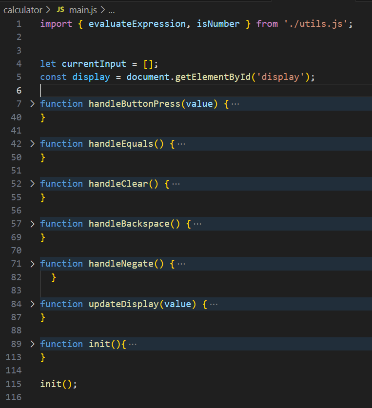
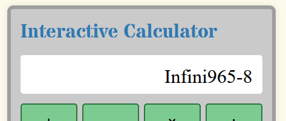

Interactive Calculator
About This Website
This basic calculator was created as part of my WDD131 final project. It is powered by approximately 150 lines of JavaScript across 9 functions. Pictured here are 7 of those functions collapsed.
Dispite being relatively simple, it takes a lot of work to make a calculator like this robust. There is much more going on behind the scenes than you'd think. Every situation has to be accounted for, from making sure that the "negate" button plays nice with subtraction opperands, to making sure that you can't type two opperands back to back, this was an excellent exercise in input validation.
One of the most fun bugs I encountered was handling cases where the built in eval() function doesn't throw an error but still returns a non-integer, for example, when you divide by zero. Prior to the fix, users could interact with the characters of these error messages just as if they were characters in an expression!
